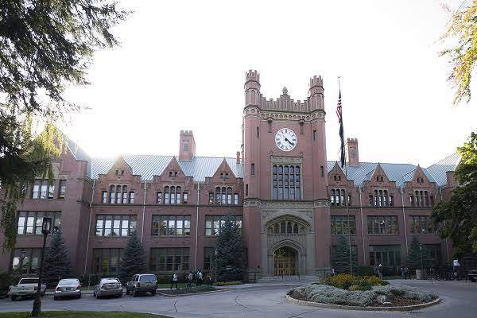
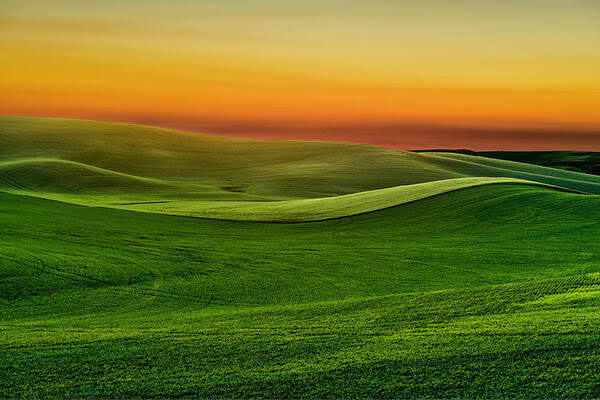
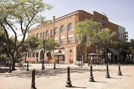
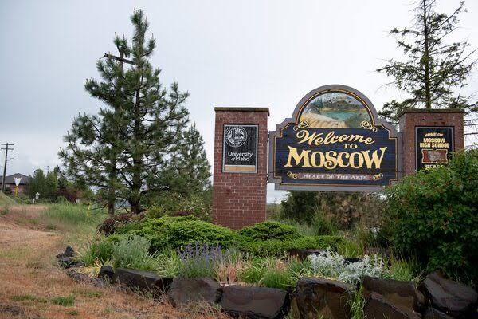
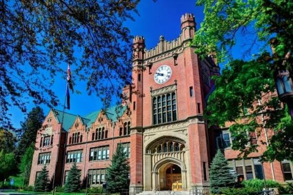
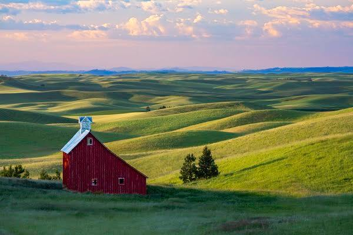
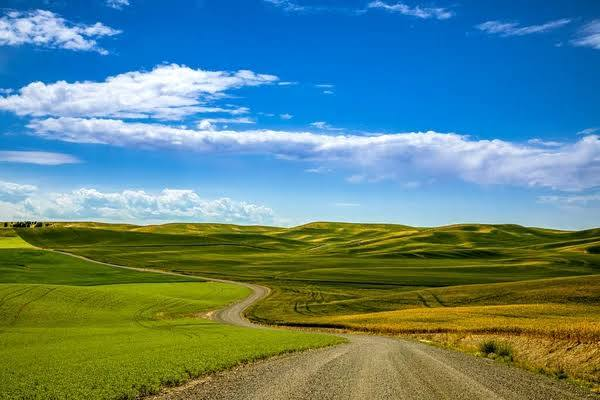
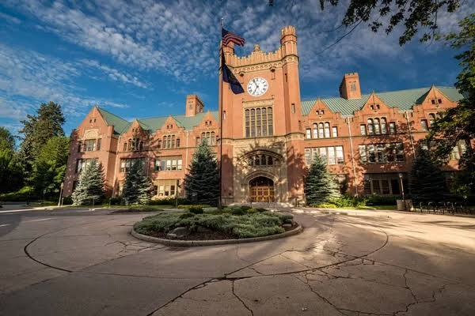

Multimédia
Explore as componentes visuais, auditivas e artísticas da cidade de Moscow, Idaho.
Ir para: Fotografias | Vídeo | Poesia
Fotografias








Vídeo
Poesia
Nas colinas suaves de Palouse,
Onde o vento desenha ondas de trigo,
Ergue-se Moscow, calma e radiante,
Um porto seguro, um lar amigo.
Entre a academia e a natureza pura,
O norte de Idaho guarda esta pintura.